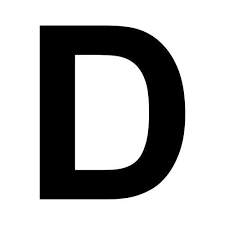
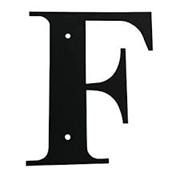

Data center
Lugar para colocar grandes cantidades de servidores y
equipos de comunicación; tiene todas las facilidades de ancho de banda, seguridad física, aire acondicionado 24 horas, etc.
Desencriptación
Descifrado. Recuperación del contenido real de una
información previamente encriptada o cifrada.
DHCP
Siglas del inglés "Dynamic Host Configuration Protocol."
Protocolo Dinámico de Configuración del Host. Un servidor de red usa este protocolo para asignar de forma dinámica las direcciones IP a las diferentes computadoras de la red.
EDGE
Siglas del inglés Enhanced Data Rates for GMS Evolution,
EDGE es la evolución de los sistemas GSM y US-TDMA. Esta modulación incrementa significativamente la capacidad de la red y las tasas de transferencia de data, permitiendo mejores funciones multimedia en los móviles, pudiendo llegar a velocidades de transmisión de data de 473kbit/s.
Eniac
Eniac, acrónimo del inglés, Electronic Numerical
Integrator And Computer, fue la primera computadora electrónica de uso general (1946).
Exabyte
Unidad de almacenamiento de información cuyo símbolo es
el EB, y equivale a 1024 Peta bytes, o 1,152,921,504,606,846,976 bytes. Hay 1024 Exabytes en un Zettabyte.

Fibra óptica
Tipo de cable que se basa en la transmisión de
información por técnicas opto eléctricas mediante una combinación de vidrio y materiales plásticos.
Frames
Opción que ofrece el lenguaje HTML de dividir una página
web en varias zonas. Cada una de las cuales puede tener un contenido independiente de las demás de forma que cada zona es asimismo un frame.
FYI
Acrónimo del inglés "For your information" (para su
información), usado generalmente por email o chat (aunque trasciende del Internet), para agilizar la conversación.